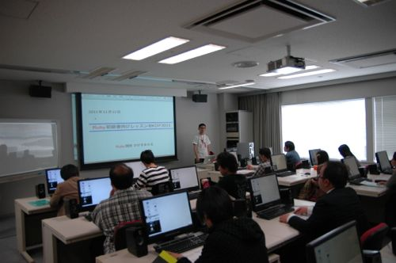
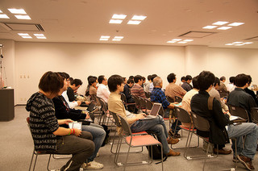
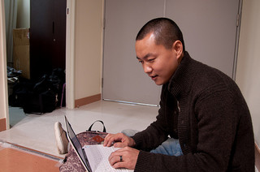
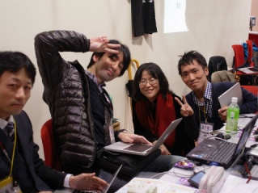
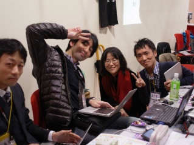
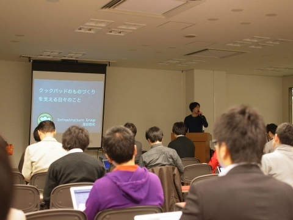
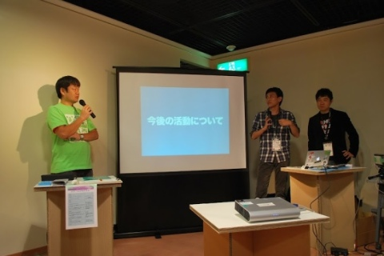
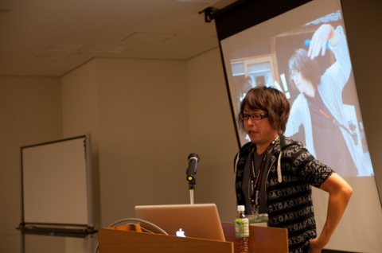

RegionalRubyKaigi レポート (28) 関西 Ruby 会議 04
RegionalRubyKaigiレポート関西 Ruby 会議 04
開催概要
: 
- 開催日
- 2011 年 11 月 11 日 (金) 13:00 〜 18:00
2011 年 11 月 12 日 (土) 10:00 〜 18:00 - 開催場所
- 大阪南港 ATC ITM棟 10F
デザインギャラリー・デザインショーケース - 主催
- 関西 Ruby 会議 04 実行委員会
- 後援
- 日本 Ruby の会, Ruby 関西, Minami.rb
- 公式ページ
- http://regional.rubykaigi.org/kansai04
- 公式ハッシュタグ
- #kanrk04
- 公式タグ
- kansairubykaigi04
はじめに
ついに 4 回目の開催となった関西 Ruby 会議。
いろいろなところからたくさんの方にお越しいただき、発表者・参加者の皆様の力もあり終始元気な会議となりました。
開催されたセッションには、 Ruby を用いた事例紹介あり、初級者レッスンあり、音楽あり、過去〜未来のお話あり。特に「原点」についてのお話が多かった、そんな印象のある会議でした。 逆にコアな技術の話は少なめで、他の地域 Ruby 会議とはひと味違った仕上がりになっていました。
様子
関西 Ruby 会議 04 は、関西オープンソース 2011 、関西コミュニティ大決戦 との同時開催でした。
そのため参加者は Rubyist に限らないのですが、Ruby をあまり知らない人たちにも楽しんでもらえる内容の発表が多かったです。
会場が迷路のようにわかりにくいのはご愛嬌。。
 

  

days.first
アジャイル川端さんのお話 by アジャイルかわばたさん (書いた人：fukajun)
: 
川端さんの携わってきた Java での開発プロジェクトをとりあげてお話をされていました。
その会社のこれまでのやり方とは違うアジャイル開発を行うという事でなかなか理解がえられず、協力的でない他のチームからの抵抗もあったそうです。
そんな中でアジャイル開発の精神を浸透させるために、「クレド」という小さなメモ帳のようなものにアジャイル開発の重要な点、精神を書いて毎日読み上げることから始めたり、プロジェクトで使うちょっとしたツールを作るイベントを開催してメンバーの一体感を高めたりして良いチームを創り上げるように工夫したそうです。
プロジェクトもうまく進んでいくと思っていた最中、事件が発生。
それは、プロジェクトの効率化のため、ほとんどのドキュメントを Wiki に記載して管理していたのですが、それが突然跡形もなく削除されてしまったそうです。
さすがの川端さんもその時は頭が真っ白になりとても焦ったそうですが、なんと幸い一週間前のバックアップをとっていたメンバーが!!
チームのメンバーから「みんなで頑張れば失った分も書き直せますよ」と温かい声が生まれ、1 週間、少しの残業で失った分のドキュメントを復旧することができた!! とのことでした。 それ以来、「バックアップをとることの大切さを覚えた」と会場を沸かせていました。
現場の担当者はアジャイル開発に理解がなくても、その上司、さらにそのまた上司は非常に理解があることが多い、アジャイル開発を実践するときはそうした人を味方につけることがコツであると話されていました。 Ruby on Rails の開発 DEMO も行われ、説明をしながらあっという間にアプリケーションを作ってしまったことに会場の注目も非常に熱かったです。
Ruby イメージソング (書いた人：shizuto_a)
: 
音楽コンテストコミュニティ クレオフーガさんで行われたRuby イメージソングコンテスト のイメージソング部門(歌もの)グランプリ曲、準グランプリ曲を、Ruby 関西 おうちカフェ部 (Ruby 関西／ Minami.rb )の 4 名によるバンドで演奏していただきました。
- 1曲目『ルビーのうた』
- 2曲目『シュビドゥワー〜 Ruby の花 Ver.〜』
- アンコール『シュビドゥワー〜 Ruby の花 Ver.〜』
演奏が終わったあとのアンコールの声に応え、急遽 2 曲目をもう一度。 バンドの後ろに空と海が見えるすてきなステージで、すてきな時間でした。
クックパッドのものづくりについて by クックパッド株式会社 (書いた人：shizuto_a)
クックパッドのものづくりを支える日々のこと by 高田悟史さん
: 
PC/携帯/スマートフォンなどで、レシピを探したり、自分のレシピをアップロードするサービスを提供しているクックパッドの裏方、インフラグループのお話をしていただだきました。
社内エンジニアの「集計したい」「データ更新したい」「開発環境が欲しい」「Rails3にしたい」など、様々な要望に応えているのがインフラグループです。 サービス開発が滞ってしまっては困るので、メインであるサービス開発の速度を上げるのが主な役割です。
具体的な仕事は、以下の 3 つに分けられます。
- サーバ準備系
- 本番同様のテスト環境を作る、社内ツールを公開する、など。
- 新規導入系
- Rails3 に移行する、など。
- その他
- データを大量に更新したい、など。
それぞれ、実際の例を交えて、どのように対応しているかお話していただきました。 エンジニアの要望に素早く応えるだけでなく、サービスの提供先であるユーザの体験を守るということを意識して、工夫されている様子がうかがえました。
エンジニアの開発を支えるのも大事な仕事で、そこでもいろんな技術や方法があるのですね。
クックパッドの新規事業 by ささたつ(@sasata299) さん
「Good はやらない。Best に集中する。」というポリシーがあるそうですが、その中で新規事業を立ち上げる部署のお話をしていただきました。
新規事業の部署では、既に 『お店くらべ』 というスーパーの比較サイトをリリース済みで、来月(2011 年 11 月当時) にも 『やさい便』 というサービスが立ち上がります。 その 「やさい便」 について、最初は開発を外部に依頼したのですが経験がないこともあって失敗し、方向転換して完全自社開発とされたそうです。
新規部署のエンジニアは開発当初ささたつさんしかいなかったため、ささたつさんが作ることに。 その時の話は「ささたつ 闇」で検索してみると、楽しめるそうです。
「毎日の料理を楽しみにすることで心からの笑顔を増やす」がクックパッドのミッションです。 現在のサイト運営で「料理するのは楽しい。」というのはある程度提供できていますが、では、「その前の買い物は楽しくできているか？」「 買い物を楽しくしよう！」 ということで始まったのが『お店くらべ』 です 。
そして次にリリースする 『やさい便』 ですが、クックパッドでは初の EC サイトということで、はじめてなことが多く、決済など何でもできるのがおもしろいそうです。ただ、エンジニアの数が少なくて、やることはいっぱいあるのに人手が足りないそうで、一緒に働いてくれる人を募集されています。
人気サイトのクックパッドで、その中のインフラや新規事業立ち上げなど普段あまり見えないところのお話ということで、 使っているツールなどの技術的な質問から、コミュニケーションをどううまくやっているか、ポリシーをどうやって根付かせているかなど、多くの質問が飛び交いました。
days.last
Social Coding with JRuby by 大場光一郎さん (書いた人：muryoimpl)
: 
JRuby に貢献されている大場さんによる JRuby の機能と歴史の紹介、大場さんがどのように Social Coding に関わって、恩恵を受けたかを Jobs コスプレで楽しくお話いただきました。
仕事で嫌々 Java を使っている人たち向けに資料を作ったのに、意外に仕事で Ruby 使っている人が多いというアウェイの中での発表… JRuby については 1.7 に向けて最適化機能の刷新がされること、また、 JRuby に実際に問題報告・パッチを投げるまでの流れをわかりやすく説明されていました。
Social Coding については継続できるよう無理せず範囲を絞って対応する、「貢献」とか難しく考えずにもっと自分のためにやればいいんじゃないかな？と提案されていました。
OSS に Contribute したことで人間関係がつながり JRuby 会議を開催できたこと、海外の Committer とネット上だけでなく現実世界でも友人になれたことなど、 Social Coding の功罪を紹介されていました。
尚、質問した Rubyist には 素敵な JRuby ステッカーがプレゼントされていました。
「 TDD と RubyKaigi 運営技術」 by 角谷信太郎さん (書いた人：fukajun)
: 
角谷さんの近況から始まり、 TDD の魅力と RubyKaigi、コミュニティの面白さについて話されました。
最近の活動としてアジャイルサムライの翻訳を担当されたことを話され、WEB＋DB 総集編にトップエンジニアとして記事が載っているので、「トップエンジニア」と呼んでくださいと楽しそうに話す角谷さんに会場も盛り上がりました。
テスト駆動開発について
テストを作ってプログラム本体を書いていく過程の中でプログラム本体に対する知識も高まり、その高まった知識によって書いたテストを振り返り、より良いテストに書きなおすことができます。双方を高めることができるのが非常に良い点である、とテストの魅力について話されました。
RubyKaigi について
RubyKaigi の非常に重要なことは、会期中に「スタッフ」、「一般の参加者」、「スポンサーの人」が同じ場所に集合するということです、人と人が話すことが非常に楽しいことであると感じました。知らない人と関わることが怖かったこともありました、でも 6 年間開催してきて人と接することは怖いことではないと知りました。※ただし Rubyist に限る
そんな RubyKaigi も最初はうまく運営できなかった、自分がやりたいことはなにか？やりたいのはなぜなのか？と毎年反省をしながら進めてきました。参加者の人からアンケートなどで要望をきいたりしてきました。
ただ要望を聞くだけではダメで、要望を開催側も納得して実行できるか、ということが大切であると思いました。 RubyKaigi では参加者がみんな Rubyist なので、自分がやりたいと思ったことがだいたいみんなで楽しめることになるからです。
KOF について
RubyKaigi やコミュニティー活動の面白さは、別の人と関わることで別の考えが生まれることです。
今回の関西 Ruby 会議、KOF という場は非常に興味関心の近い人が集まっているので、知らない人に声をかけてみるのには非常に良い機会です。 すごい人に声をかけるのは勇気のいることですが、みんな人間なので気後れすることはない、やってみればきっと良いことあるはずなのでやってみてください。 と非常に心強いお言葉をいただきました。
まとめ
関西の Ruby コミュニティー、関西 Ruby 勉強会、Minami.rb は非常に楽しい人も多いので、今回のイベントを機会にコミュニティーに積極的に参加してはどうか？と締めくくりました。
初心者レッスン by ひがきさん (書いた人：shizuto_a)
Ruby 関西名物、ひがきさんによる初心者レッスンの出張版です。 約 40 台 PC のあるコンピュータルームで、2 回に分けて行われました。
Ruby の特徴、 irb の使い方、構文や基本的なクラスの使い方を簡単に説明した後、各自 FizzBuzz に取り組みました。
FizzBuzz とは、もともとプログラマの入社面接の際に志望者がプログラムを書けるか見極めるためには、履歴書や話だけでは区別できず、その場でコードを書いてもらうのがよいという提唱の中で出てきた問題で、
- 1から順に数を数えていく
- ただし「 3 の倍数のときは数字の代わりに Fizz 」「 5 の倍数のときは Buzz 」「両方の倍数のときは FizzBuzz 」とする。
- つまり、1, 2, Fizz, 4, Buzz, Fizz, 7, 8, Fizz, Buzz, 11, Fizz, 13, 14, FizzBuzz, 16, 17, Fizz, …
- というものです。

参加されたみなさんは、ひとくくりに Ruby 初心者とは言ってもプログラミング歴は様々で、プログラミング自体も初心者という方もいれば、Java 歴は長いという人までいらっしゃいました。課題のほうも、早々に書き上げてしまう方もいれば、ひとつひとつに悪戦苦闘される方も。
会場にいた多く(マンツーマンでもいけそうなくらい！)の Rubyist たちがアシスタントに入り、一歩一歩進めるように手助けをしたり、「早めにできた人はワンライナーで書いてみよう」とレベルアップを促したりしました。
Ruby 関西ではこれからも Rubyist コミュニティを盛り上げていけるよう、がんばります。
一般社団法人日本 Ruby の会のほうから来ました (書いた人：spring_aki)
: 
一般社団法人日本 Ruby の会 角谷理事、島田理事から法人化の経緯と今後の活動についてご報告いただきました。
2004 年に設立された「日本 Ruby の会」は 2011 年 8 月に一般社団法人になりました。Ruby の利用者の支援と Ruby (+Ruby のライブラリ) 開発者の支援を目的とした”一般社団法人”となります。 法人となった経緯ですが、いままでにも法人化しないのかという話は周りからよくありましたが、「枠組みを先に作るのではなく実態としての活動があってのものではないか。それらがなくて箱だけ作るのはどうだろうか。」といった高橋会長の意見もあり、今まで法人化には踏み込みませんでした。
任意団体は結局個人なので、そこで限界がくるまで (法人じゃないとできない事がでてくるまで) 頑張ってみようという意向があったのです。しかしこの 5, 6 年の活動で日本 Ruby 会議の規模なども限界がきてしまいました。今までは結局個人の集まりでその都度頑張るという部分があったのですが、これからは継続的な活動を視野に入れて活動を行なっていくことになります。
Ruby に関する問い合わせがあった時の問い合わせ先のルーティングや初めて Ruby を触る人の支援や初級者が中級者になる為の支援などを模索していくと共に、 Ruby に関する様々な相談に応じていくそうです。
私はいかにして Ruby によるオープンソース活動を楽しくやってきたか (書いた人：spring_aki)
: 
みなさんはコンプレックスとどのように付き合っているでしょうか。
@jugyo さんはセッション冒頭で、「学歴がなかったり知識や経験が中途半端だったりすると、色んな事にコンプレックスがでてくるものですよね」と語られました。 コンプレックスの種類は人それぞれだとおもいますが、@jugyo さんの場合は「とにかく開発をする!!」という方法で折り合いをつけるそうです。コンプレックスとうまく付き合う方法を見つけられると幸せになれるんじゃないかというお話でした。くよくよ悩んだりして過ごすよりも、とにかく前を見て開発をするんだ! という @jugyo さんの力強い意志を感じますよね。
コンプレックスによって本来の力が発揮できないのは勿体ないですし、どんな状況であれコンプレックスが付き纏うのであれば、うまく付き合う方法を模索して、逆にプラスの力に変えてしまえばいいと思います。そしてまさにそれを実践しているのが @jugyo さんだと思います。
また @jugyo さんは数々の gem を開発・公開して様々な問題解決のソリューションを提供しています。セッション内では ir_b を中心にそれらの gem の解説や gem を作った後のプロモーションの重要性などをお話いただきした。 また「プログラマとしての能力アップのコツとして適当 (！？) なプロダクトを作って、小さなモノから初めてみるとやりやすいよ。」や「ひらめいたら作り始める。そしてそれはたいてい似たようなものが他にあります。たまたま誰も手を出していない分野を発見できるとラッキーなんです。」などスキルアップや楽しい開発を続けるアドバイスなども含めてお話頂きました。
Ruby から教わったものづくり by 大和田 純さん (書いた人：muryoimpl)
: 
「弱肉強食」の世界で自分の立ち位置を再確認すると自分は「強」ではない、生存のためには自分の能力が発揮できる領域を見つけてその領域で生きていく必要がある、それを「適者生存」という言葉を使ってお話されていました。
適者生存の道へ進む道を示したのは、 Rails ・ heroku を使った経験、RubyKaigi でのスタッフ経験だったそうです。 Web Developer としての自分、コードだけでなく人間にフォーカスすることを「適」として今を進んでいるとのこと。 良いものを良いと感じられる感覚「絶対良感」とでも言うべき感覚を大切にすること。理屈ではないかもしれないけれど、自分の感覚を信じ「良い」と思える感覚を大事にして欲しいというメッセージを受け取った講演でした。
講演の中で、事業をコードというかたちにしたときに人間にわかりやすい API は事業自体をもリファクタリングしてしまう、という事例を聴いたとき、コードの力はすごいんだなと感じました。
懇親会


謝辞
お忙しい中セッションの担当を快諾いただき初日にご登壇いただきました川端光義さん、Ruby 関西 おうちカフェ部のみなさん、クックパッド株式会社の 高田悟史さん、佐々木達也さんありがとうございました。 最終日にご登壇いただきました大場光一郎さん、角谷信太郎さん、河野十行さん、島田浩二さん、大和田純さんありがとうございました。
また、併催というかたちで開催の場を与えてくださった関西オープンフォーラム( KOF )の方々に感謝します。 当日ブースに来た方の応対をしたり、初級者レッスンの TA をしてくださったRuby 関西、Minami.rb の皆さんに感謝します。 後援いただいた日本 Ruby の会 、Ruby 関西、 Minami.rb に感謝します。
公式サイトの設置にご協力いただきました Yuna Design 様、かずひこさんに感謝します。あんなにたくさんのバッジまで作成いただき感謝、感謝です。
当日ご来場いただいた皆さんのお陰で無事会議を納めることができました。ありがとうございました。
最後に
私たちが開催するきっかけをつくった関西 Ruby 会議 04 で、Ruby に限らず、何かのきっかけをつかんでいだけたのであれば嬉しい限りです。
それではまた次回の関西 Ruby 会議でお会いしましょう。
写真の提供
@koichiroo さん撮影: http://www.flickr.com/photos/koichiroo/sets/72157628046867355/with/6361843043/
@iR3 さん撮影: https://plus.google.com/photos/111395720282717418903/albums/5674493156038252913?banner=pwa
@shizuto_a さん撮影: http://www.facebook.com/media/set/?set=a.251131804943472.63881.100001399646758&type=3
@spring_aki さん撮影: https://plus.google.com/photos/107634078215251334427/albums/5674528924717309601?hl=ja
スタッフロール
主に運営に関連する作業を担当した皆さん
- 実行委員長
- @no6v
- 会計
- @spring_aki
- @ayupanda
- 懇親会幹事
- @smantani
- @spring_aki
- 雑務担当
- @higaki
- 日記担当
- @shizuto_a
- @ayupanda
- @no6v
- ロガー
- @muryoimpl
- @shizuto_a
- @spring_aki
- @fukajun
主に広報に関連する作業を担当した皆さん
- 第四回 関西 Ruby 会議 公式サイト & バッジデザイン
- Yuna Design 様
- サイト調整
- かずひこ さん
- @no6v
- @ayupanda
- るびまレポート記事担当
- @muryoimpl
- @shizuto_a
- @spring_aki
- @fukajun
盛り上げた皆さん
- 当日ご参加いただいた皆さん and … You !!